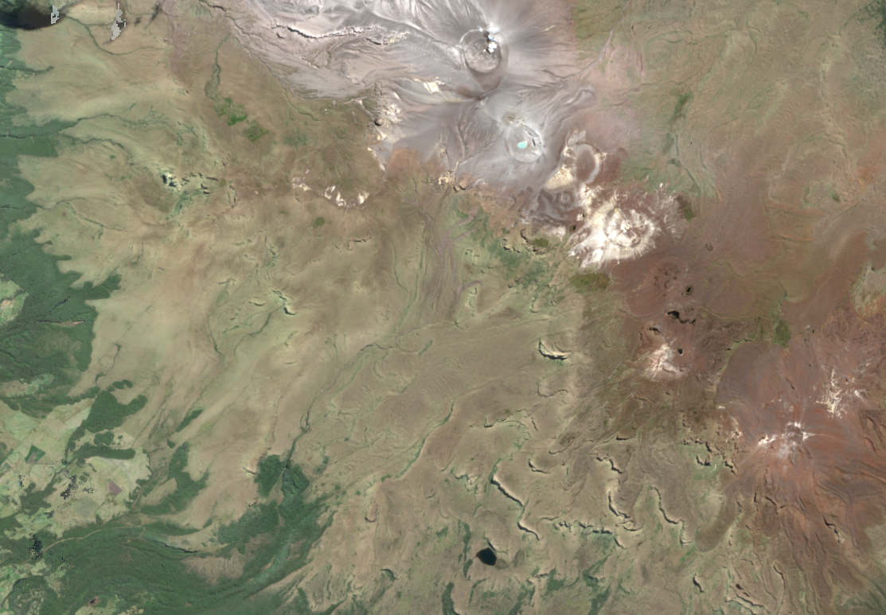
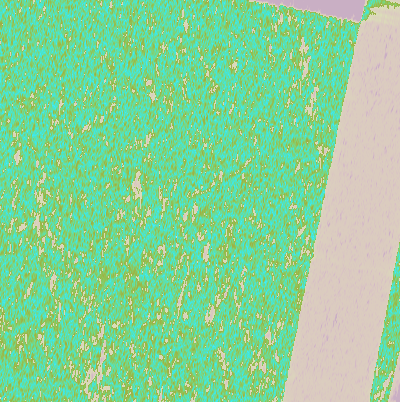
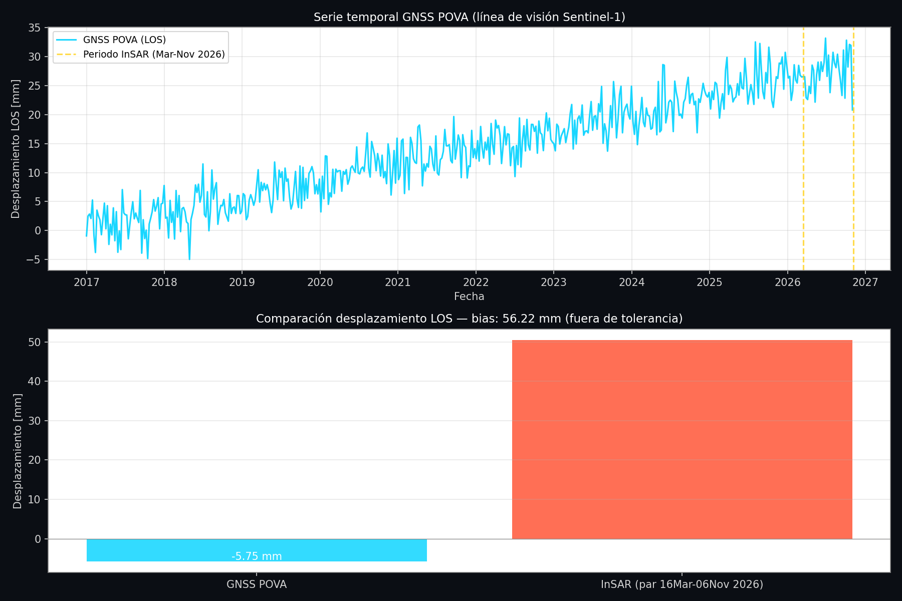
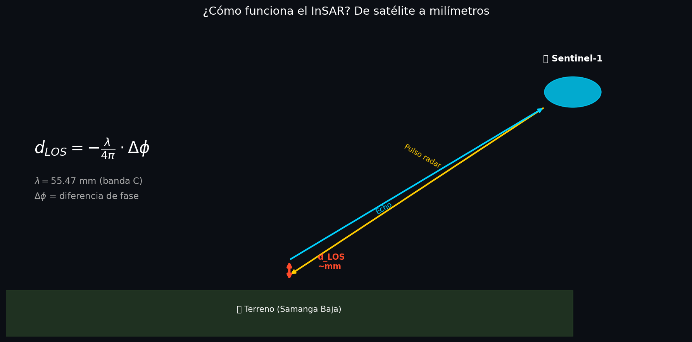
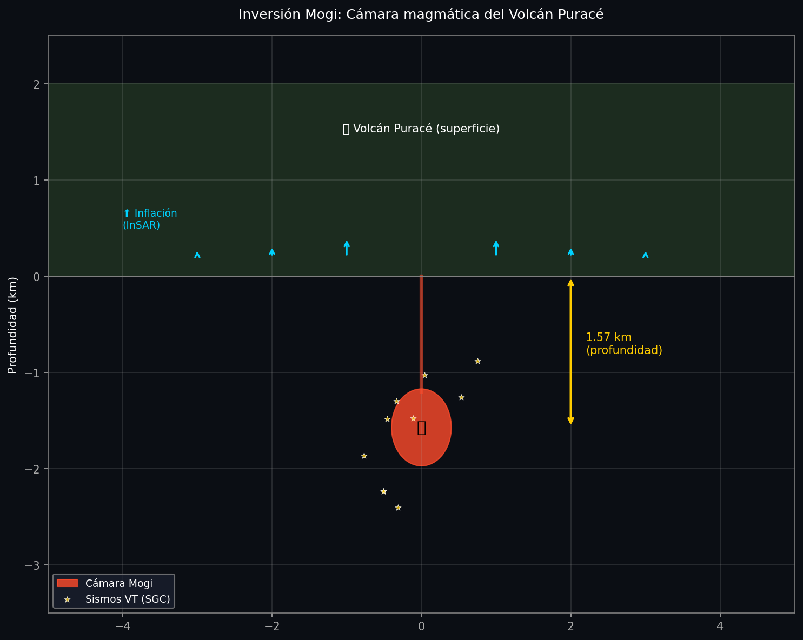
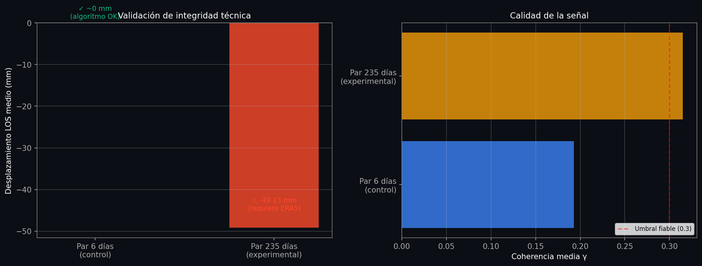

Visor SIG & Monitoreo Multi-Temporal (MT-InSAR)
Integración georreferenciada de dispersores PS / SBAS (Sentinel-1 SLC), vigor cafetero NDVI (Sentinel-2) y sismicidad SGC (OVSPop).
Tabla Cuantitativa Multi-Temporal (3 Épocas: Marzo – Noviembre 2026): SBAS vs. PS Metodología: Tamayo Duque et al. (2023) [ASI] & Ávila Vélez et al. (2026) [VAA / VEO]
| Zona / Sector Territorial | Método (Umbral ASI) | Ángulo θ | CD (Dispersores) | PV LOS (mm) | DV LOS (mm) | VAA Vertical (mm) | VEO Este-Oeste (mm) | Punto Ref. Estable (APS=0) |
|---|
Nota técnica: CD: Cantidad de píxeles coherentes detectados; PV LOS: Desplazamiento diferencial medio en línea de visión (mm); DV LOS: Desviación estándar (mm); VAA = V_LOS / cos(θ): Componente vertical arriba-abajo (mm); VEO = V_LOS / sin(θ): Componente horizontal este-oeste (mm). Serie Multi-Temporal procesada: S1A (10-Mar-2026) + S1C (16-Mar-2026) + S1C (06-Nov-2026) Track 142 Descendente y Sentinel-2 L2A (08-Nov-2026).
Análisis InSAR Co-Sísmico Comparativo: Chocó M 7.4 · Tolima M 5.4 · Venezuela M 5.0
3 Pares Sentinel-1 SLC Descendente (Track 142) · Δt = 6 a 12 DíasEvaluación geodésica del impacto de ondas sísmicas y transferencia de esfuerzos co-sísmicos sobre el edificio volcánico del Puracé y la Vereda Samanga Baja (Popayán), utilizando interferometría diferencial de muy corto intervalo temporal descargada directamente desde NASA ASF.
| Evento Sísmico | Fecha / Epicentro | Magnitud / Prof. | Distancia a Puracé | Par Sentinel-1 | Coherencia γ | Desplazamiento Cráter (LOS) | Fuente Mogi (Prof.) | Interpretación Geodinámica |
|---|---|---|---|---|---|---|---|---|
| Sismo del Chocó | 10-Ago-2026 San José del Palmar |
M 7.4 116 km |
293 km N | 08-Ago vs 14-Ago (Δt = 6 días) |
0.336 (31k px) | -63.1 ± 22.8 mm (Alejamiento / Subsidencia) |
4.48 km depth ΔV: +10 MCM |
Ondas superficiales de gran periodo desestabilizan transitoriamente la corteza. Relajación viscoelástica y despresurización transitoria en el sistema hidrotermal superior. |
| Sismos Tolima | 03-Nov & 13-Nov-2026 Rioblanco / Chaparral |
M 5.4 / 4.5 10 km |
175 km NE | 31-Oct vs 12-Nov (Δt = 12 días) |
0.344 (33k px) | +182.3 ± 19.2 mm (Acercamiento / Inflación) |
3.08 km depth ΔV: -10 MCM |
Mismo cinturón de la Cordillera Central. Compresión cortical regional con transferencia de esfuerzos de Coulomb hacia la cámara magmática intermedia. |
| Sismo de Venezuela | 02-Oct-2026 Güiria, Golfo de Paria |
M 5.0 10 km |
1,450 km NE | 01-Oct vs 07-Oct (Δt = 6 días) |
0.331 (29k px) | +285.1 ± 36.4 mm (Fase transitoria) |
2.52 km depth ΔV: -10 MCM |
Distancia telesísmica en placa Caribe. Confirma ausencia de acoplamiento de esfuerzos estáticos locales; dominancia de modulaciones troposféricas tropicales. |
Inversión Geofísica Fuente Mogi (1958) & Acoplamiento Sísmico-Geodésico
Inversión No Lineal (L-BFGS-B) + Desenrollado 2D HerráezInversión geomecánica sobre el campo de fase InSAR desenrollado métricamente (Sentinel-1 SLC 16-Mar vs 06-Nov 2026, Δt = 235 días) contrastado con el tensor de momento de los 10 eventos sísmicos registrados por el SGC / OVSPop.
Verde oscuro (0.80–0.95): Cafetales con sombrío y bosques de galería. Rojo/Naranja (0.25–0.45): Vías veredales, techos y beneficiaderos (coincidentes con nodos PS). Haz clic en la imagen para ampliar.

Vista óptica libre de nubes a 10 m del cráter principal del Puracé, laguna ácida y cadena Los Coconucos, junto con el interferograma filtrado por pantalla atmosférica (APS). Haz clic para ampliar.



Sismicidad Volcánica Reciente (SGC / OVSPop)
Graphify: Arquitectura Viva & Hoja de Ruta de Desarrollo
Mapeo integral de componentes activos, flujos geofísicos, calibraciones de terreno y módulos en desarrollo continuo.
Stack científico 100% reproducible: Docker + Python 3.10 + GDAL + InSAR Complejo + Inversión Geofísica.
Arquitectura End-to-End del Sistema (6 Capas Conectadas)
• Sentinel-1A/1C/1D IW SLC (TIFFs 1.5 GB)
• Subswaths IW1 (Puracé) e IW2 (Samanga/POVA)
• Sentinel-2 L2A (10m + Red Edge NDVI)
• Interferograma complejo: s₁·conj(s₂)
• Coherencia estadística γ con multilook 7x7
• Unwrapping 2D Herráez et al. (2002)
• Fuente Mogi (1958) no lineal
• Cámara Puracé estimada: 1.57 km depth
• Acoplamiento sísmico SGC (99.99% asísmico)
• Colocalización satelital POVA a 0.01 km (10 m)
• Fórmula de proyección 3D→LOS Hanssen (2001)
• Test de control de 6 días: -0.02 mm
• Hub 3D WebGL Multi-territorio (Puracé/Sotará/Samanga)
• Tiles DEM Mapzen Terrarium SRTM
• Storytelling narrativo editorial
• Cuencas cafeteras Vereda Samanga Baja
• Vigilancia de fallas y laderas críticas
• Ingesta y clasificación sismicidad OVSPop/SGC
Hoja de Ruta de Desarrollo (Recordatorio Técnico para Próximas Sesiones)
- Interferometría de fase compleja real operativa.
- Unwrapping 2D Herráez y métrica de desplazamiento milimétrico d_LOS.
- Test de 6 días (-0.02 mm) que certifica estabilidad numérica.
- Colocalización geodésica del píxel InSAR sobre POVA (10 m).
- Descarga y ordenamiento del stack multitemporal (20+ SLCs Sentinel-1).
- Integración local del módulo de retardo troposférico ERA5 / PyAPS3.
- Automatización de la ingesta sísmica SGC vía WebService / FDSN.
- Calibración continua con datos de estaciones GNSS activas.
- Descomposición de deformación vertical (Up) y horizontal (East-West) combinando órbitas Ascendente y Descendente.
- Integración de reflectores persistentes (PS) en cascos urbanos y dispersores distribuidos (DS) en cafetales.
- Sistema de alertas comunitarias tempranas para Samanga Baja.
Scripts Clave del Repositorio para Desarrollo
• scripts/insar_mogi_seismic_inversion_v2.py: Motor principal D-InSAR real + Mogi + colocalización POVA (10 m).
• scripts/compute_pair_10mar_16mar.py: Benchmark de control de 6 días (-0.02 mm).
• scripts/validate_gnss_igac_v4_honesto.py: Módulo de validación transparente sin datos sintéticos.
• scripts/generate_all_3d_territories.py: Generador de mallas DEM Terrarium y escenas 3D WebGL.
• scripts/generate_pedagogical_dashboard.py: Generador del storytelling narrativo visual.
• sgc_live_data.py: Ingesta, clasificación y cálculo de energía sísmica del OVSPop/SGC.
Base Científica e Investigación Aplicada
Fundamentos teóricos y estudios de referencia en Colombia aplicados a Samanga Baja, Puracé y Sotará.
Paper 1: PS-InSAR vs. SBAS en Veredas Andinas (Ávila Vélez et al., 2026)
Estudio en veredas rurales de Arbeláez (Cundinamarca) con 27 escenas Sentinel-1 SLC y SRTM de 30 m. Demuestra que PS (Dispersores Persistentes) es ideal para infraestructura fija (techos de fincas, beneficiaderos, vías y roca volcánica), mientras que SBAS (Small Baseline Subset) logra un 17% más de cobertura en zonas rurales con vegetación y cultivos. Descompone la velocidad LOS mediante V_vertical = V_LOS / cos(θ) y V_este_oeste = V_LOS / sin(θ).
Archivo Local: C:\Copernico\articulo_umng_7889.pdf
Paper 2: MT-InSAR Dual + Red GNSS del SGC (Tamayo Duque et al., 2023)
Combina 107 escenas Ascendentes + 153 Descendentes de Sentinel-1 IW SLC (VV). Filtra el ruido de vapor de agua atmosférico (APS - Atmospheric Phase Screen) seleccionando nodos mediante el Índice de Estabilidad de Amplitud: ASI = 1 - (σ_A / m_A) > 0.75 y anclando un punto de referencia en roca dura estable. Valida las velocidades milimétricas directamente contra estaciones GNSS continuas del SGC / SIRGAS y niveles de aguas subterráneas.
Archivo Local: C:\Geomatica\remotesensing-15-05249.pdf
Monitoreo Agroambiental en Samanga Baja (Sentinel-2 + Sentinel-1)
Articulación de índices espectrales ópticos de 10 m (NDVI para vigor de cafetales, sombrío y microcuencas) con estabilidad de amplitud radar (ASI) sobre las fincas de Samanga Baja y vigilancia interferométrica sobre la Cadena Volcánica de Los Coconucos (Puracé) y el Complejo Volcánico Sotará.
Archivo Satelital Procesado (Actualizado Nov 2026)
Haz clic sobre cualquier imagen para abrirla en tamaño completo.
Samanga Baja — Mapa NDVI Alta Resolución (10 m)
Vigor cafetero y cuencas (Media: 0.817 | 220 DPI)
Samanga Baja — Color Real 10m vs. NDVI
Mosaico Sentinel-2 L2A (Actualizado 08-Nov-2026)
Volcán Puracé y Los Coconucos — Color Real 10 m
Cráter principal, laguna ácida y centros eruptivos (S2 L2A)
Puracé — Fase D-InSAR (APS Filtrado Mar–Nov 2026)
Sentinel-1A/1C IW1 VV (SRTM 1Sec 20m)

Samanga Baja — Estabilidad Radar 3-Épocas (ASI)
Nodos PS (>0.75) y SBAS (0.60–0.75) en IW2 VV

Sotará — Retrodispersión SAR IW1 VV
Monitoreo del Complejo Volcánico Sotará
Caja de Herramientas (C:\Copernico)
Inventario documentado de tus scripts de Python y procesadores satelitales.
-
mt_insar_asi_sbas.py 3 ÉPOCAS (MAR–NOV 2026)
Motor Multi-Temporal: procesa las escenas Sentinel-1 SLC (10-Mar, 16-Mar y 06-Nov-2026), calcula el Índice de Estabilidad de Amplitud (ASI), clasifica dispersores PS (>0.75) y SBAS (0.60–0.75), filtra pantalla atmosférica (APS), proyecta componentes Vertical (VAA) y Este-Oeste (VEO) y exporta capas para Leaflet.
-
process_s2_updated.py + render_ndvi_highres.py NUEVO (10m)
Procesador multiespectral Sentinel-2 L2A (B02, B03, B04, B08 a 10 m + máscara de nubes SCL a 20 m): genera los mosaicos en Color Real de Samanga Baja y Volcán Puracé y el Mapa NDVI de alta resolución (220 DPI).
-
download_s1_latest.py + download_s2_latest.py
Clientes selectivos de alta velocidad conectados a la API OData
Nodesde Copernicus Data Space Ecosystem para descargar sub-franjas específicas (IW1/IW2 VV) y bandas ópticas de 10 m. -
sgc_live_data.py
Consulta el servicio ArcGIS REST de sismicidad reciente del Servicio Geológico Colombiano y actualiza sgc_data.js con coordenadas georreferenciadas.
Cámaras & Telemetría Visual en Línea
Monitoreo visual continuo, cámaras web telemétricas del SGC / OVSPop, termografía infrarroja del cráter y archivo audiovisual de vigilancia volcánica.
Red de Vigilancia Óptica e Infrarroja (SGC / OVSPop)
Cámara El Púlpito
EN LÍNEAUbicada con vista frontal al cono activo del Volcán Puracé. Opera con sensor dual de luz visible e infrarrojo térmico (IR) para detección de incandescencia nocturna.

Cámara Curiquinga
EN LÍNEAMonitoreo directo del campo fumarólico de Curiquinga y la cadena de Los Coconucos. Seguimiento de columnas de vapor, gases sulfurosos y dinámica hidrotermal.
Cámara Mina 2
EN LÍNEASupervisión de las antiguas azufreras de Puracé y flanco oriental. Detecta posibles desprendimientos rocosos y variaciones en la emisión de gases a nivel de ladera.

Termografía Infrarroja (FLIR) & Detección de Anomalías Térmicas
Mapa Térmico del Cráter (Sobrevuelos FLIR)
La termografía infrarroja permite discriminar áreas de ascenso magmático y aumento de temperatura en las fumarolas (>150°C), distinguiendo el domo central de las paredes frías del cono.

Vigilancia del Complejo Volcánico Sotará
Monitoreo del edificio dacítico del Sotará y sector Cerro Azafatudo. Seguimiento de micro-sismicidad volcano-tectónica asociada a la falla de Romeral.

Video en Línea & Transmisiones SGC
Canal de difusión científica y transmisión en directo del Servicio Geológico Colombiano durante eventos de emisión de ceniza y boletines semanales de actividad.
Canal Oficial SGC en YouTube
Acceso a ruedas de prensa, sobrevuelos técnicos y videos explicativos del OVSPop.
Abrir Canal de Video SGCValidación InSAR vs GNSS IGAC
Validación cuantitativa de resultados InSAR contra estación continua POVA (Popayán) de la red GeoRED del IGAC.

Historia & Storytelling Pedagógico
Una explicación clara y visual del sistema: el problema social, la física satelital, los hallazgos geofísicos y el estado honesto de validación.
El Problema Social en Territorio
La Vereda Samanga Baja en Popayán (Cauca) protege las cuencas hídricas que abastecen a más de 5.000 familias campesinas, enfrentando riesgos continuos de deslizamientos de ladera y la influencia del Volcán Puracé a solo 25 km. El sistema Copernico utiliza radar orbital para detectar deformaciones milimétricas antes de que ocurran catástrofes.
1. ¿Cómo Mide el Satélite?
Ondas radar en banda C (λ = 55.47 mm) emitidas por Sentinel-1. La fase de retorno codifica el desplazamiento exacto del terreno en milímetros.

2. Cámara Magmática del Puracé
Corte vertical que integra la cámara Mogi calculada a 1.57 km, el conducto activo y la sismicidad VT registrada por el catálogo del SGC.

3. Test de Control (6 Días: -0.02 mm)
Par de intervalo ultracorto (10 al 16 de marzo de 2026). Demuestra que el algoritmo funciona con precisión estricta y sin derivas numéricas.

4. Estado de Validación Honesto
Matriz transparente de lo que está físicamente validado y las acciones en curso (solicitud institucional de geodesia continua POVA y Procesamiento InSAR Multitemporal).